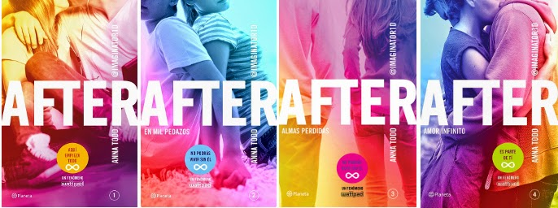

AFTER PAGE 

Información de la saga After
After es una saga de 5 libros que cuenta una historia de amor joven, con adrenalina y desafios que viven los dos actores principales. La pelicula se estrenó en el 2019 sin embargo tuvo muchas críticas de ser lo que el público no se esperaba. En el 2020 se estrenará la segunda pelicula.
Libro 1: After
La serie After comienza con Tessa, una joven de 19 años que comienza su vida universitaria lejos de casa, conoce a personas que más adelante le traerían problemas. Hardin, el típico chico malo de universidad con tatuajes y piercings por todas partes es un chico que atrae a varias mujeres y le gusta jugar con ellas hasta que conoce a Tessa.El amor de ellos comienza como un juego, Hardin apuesta con sus amigos que Tessa se enamoraría de el pero los dos se enamoraron en el proceso. Tessa tiene un novio llamado Noah cuando llega a la universidad pero se olvida de el gracias a Hardin. La madre de Tessa le da un ultimatum con la residencia en la universidad y Hardin la invita a vivir con el, allí viven muchas aventuras juntos. Al final del primer libro Tessa se da cuenta que todo era una apuesta y que Hardin solo había estado con ella por un juego, Hardin lamenta haber hecho eso y le hace entender que el se enamoró de verdad en el proceso. Se estrenó en el 2014 de forma física. Ha sido una tendencia en wattpad.
Libro 2: En mil pedazos
El primer libro termina de la peor manera para Tessa, en este Hardin intentará corregir su error, el la quiere aunque no como ella quisiera. Tessa está en estado de shcok por unos dias y Zed el amigo de Hardin se aprovecha de la situación, comienza a enamorarse de Tessa aunque ella aun está dolida con Hardin. Tessa comienza a trabajar en la editorial de Vance y allí conoce a Trevor, un chico atento y bien presentado. Hardin le regala un carro a Tessa con el dinero que ganó de la apuesta, sin embarog, ella no lo acepta. Hardin continua haciendo cosas para que Tessa lo perdone. Al final del libro Tessa sufre un accidente automovilistivo y conoce a su padre el cual abandonó a su madre y a ella cuando era una niña. El padre de Tessa es alcohólico y drogadicto.Este libro no tuvo tanto auge como el primero, se estrenó en el 2014.
Libro 3: Almas perdidas
Tessa encuentra a su padre perdido en el alcohol sin enbargo Hardin ayuda que la relación de ellos mejore, el padre de Hardin interna al padre de Tessa. Seattle es la mejor opción de Tessa y decide vivir allí con Vance, Kimberly su esposa y su hijo. El sueño de ella siempre ha sido tener hijos y casarse pero Hardin no quiere nada de eso. La madre de Hardin vive en Londres y se va a casar, los invita a la boda aunque Hardin no quiera ir. En el viaje Hardin y Tessa revelan secretos de la madre de Hardin los cuales casi impiden que se case. Hardin se dio cuenta que su padre era Vance y que todos los años le habían estado mintiendo.Este libro volvió a ser tendencia, se estrenó en el 2014.
Libro 4: Amor infinito
Hardin siente que no puede continuar con Tessa porque cada vez la introduce en un problema nuevo, decide irse con sus amigos drogadictos de Londres y Tessa rompe en llanto. Tessa se devuelve sola a Washington y va a recoger sus cosas a la casa de Hardin, allí se encuentra con algo que no podrá superar facilmente. Hardin al enterarse de lo sucedido regresa de inmediato y trata de recuperar a Tessa nuevamente, pero continuaran con la historia de amor? o Tessa tomará una decisión definitiva con respecto a Hardin.Se estrenó en el 2015.
Película After:
Se estrenó en el 2019 y los espectadores estaban decepcionados de los cambios que tuvo la pelicula con respecto al libro. Fué una historia que referencia al primer libro pero tenia diferencias que hacian la pelicula poco atractiva, no llamaba tanto la atención. Se estrenará la segunda pelicula de la saga en el año 2020 en septiembre, los espectadores esperan más de la producción de esta pelicula.
Anna Todd es la autora de la saga de After. Anna nació en el año 1989 en Ohio, Es una escritora estadounidense, conocida por su obra escrita After, que tuvo como inicio una pasión por la boyband One Direction, en la aplicación Wattpad. Actualmente, vive en Austin con su marido, con quien se casó un mes después de graduarse, a los dieciocho años.